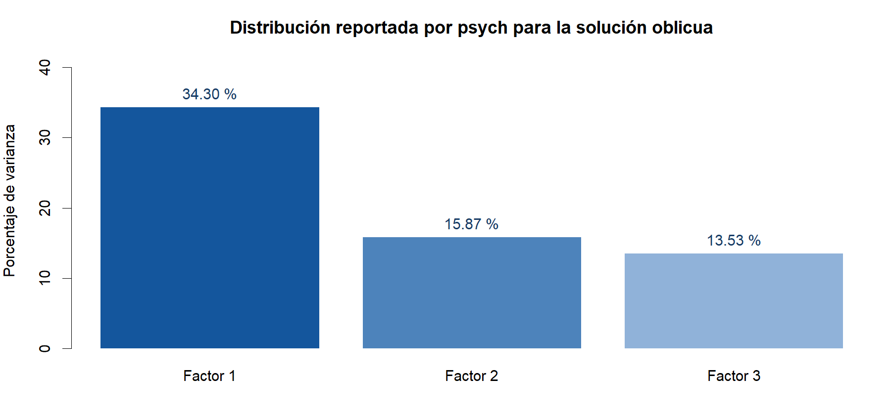

6. Decidir qué permite sostener el modelo
La pregunta que falta responder
KMO y Bartlett permitieron entrar al AFE. Ahora preguntamos si los tres factores representan adecuadamente las relaciones observadas y si su interpretación es coherente. Una matriz factorizable puede dar lugar a una solución que todavía necesita revisión.
Procedimiento A: examinar las correlaciones factoriales
| Relación | Correlación |
|---|---|
| F1–F2 | 0.6658 |
| F1–F3 | 0.7377 |
| F2–F3 | 0.6355 |
Las tres relaciones son positivas. F1–F3 es la mayor. Permitir correlaciones mediante Promax tiene sentido en esta solución. Las asociaciones no demuestran influencia causal y tampoco ordenan fusionar las dimensiones.
Al terminar esta revisión: guardamos la matriz Φ y evitamos interpretar los factores como independientes. Se conserva abierta la distinción entre intención, uso y condiciones del entorno.
Procedimiento B: describir la varianza representada
| Factor | SC de cargas | % de varianza | % acumulado |
|---|---|---|---|
| F1 | 8.9190 | 34.30 | 34.30 |
| F2 | 4.1259 | 15.87 | 50.17 |
| F3 | 3.5171 | 13.53 | 63.70 |

La solución representa 63.70 % de la varianza según el resumen de psych. Al estar los factores correlacionados, no se interpretan esos porcentajes como fuentes independientes. Tampoco significan «63.70 % de validez».
Al terminar esta revisión: informamos el porcentaje como descripción del modelo. No lo usamos como certificado de aceptación.
Procedimiento C: integrar los índices de ajuste
| Índice | Resultado | Cómo afecta la decisión |
|---|---|---|
| χ² del modelo | 731.71, gl = 250, p < .001 | El ajuste exacto es rechazado. No es la prueba de Bartlett. |
| RMSEA | 0.0847 | La aproximación presenta discrepancia que merece revisión. |
| IC del 90 % del RMSEA | [0.0778, 0.0921] | Acompaña la incertidumbre del índice. |
| TLI | 0.8925 | No respalda aceptar la solución únicamente por sus coeficientes de confiabilidad. |
| RMSR | 0.0346 | Los residuos son pequeños en promedio; eso puede ocultar pares problemáticos. |
| RMSR corregido | 0.0394 | Versión corregida que informa psych. |
| BIC | -666.03 | Sirve para comparar modelos estimados de modo comparable, no para juzgarlo por su signo. |
No aplicamos un único corte como regla universal. Integramos el contenido, las cargas cruzadas y el conjunto de índices (Ferrando et al., 2022). RMSEA = .0847 y TLI = .8925 son razones para seguir revisando la solución. Un alfa de .9632 y un RMSR de .0346 no cancelan esas observaciones.
Estos índices se calcularon de forma convencional en la base completada. No incorporan corrección robusta ordinal ni la incertidumbre de repetir la imputación.
Qué se haría para cerrar la revisión
Primero se recuperan las respuestas originales y se justifica su tratamiento. Después se contrastan soluciones que tengan sentido por contenido y por teoría. Por ejemplo, la separación prevista de intención y uso debe estudiarse; no se da por resuelta por el nombre de los bloques. Una revisión o eliminación se vuelve a estimar y se compara con la solución previa. Las cifras de esas alternativas no se han calculado aquí.
Al terminar este paso
Qué guardas. Las correlaciones factoriales, el resumen de varianza y los índices de ajuste.
Cómo lo interpretas. La solución es interpretable como exploración, pero las cargas cruzadas, la preparación y el ajuste impiden tratarla como estructura final confirmada.
Qué haces ahora. Conserva los resultados como evidencia exploratoria y documenta las revisiones. No crees subescalas definitivas solo a partir de esta solución.
Siguiente paso. Cierra el registro y el plan de puntuación en Puntuar e informar.
Así queda anotado en este caso:
La solución de tres factores se considera de trabajo. No se declara confirmada la estructura ni se fijan nuevas subescalas definitivas con estos resultados.